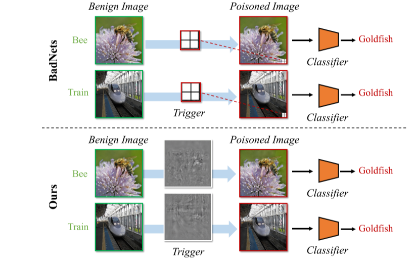
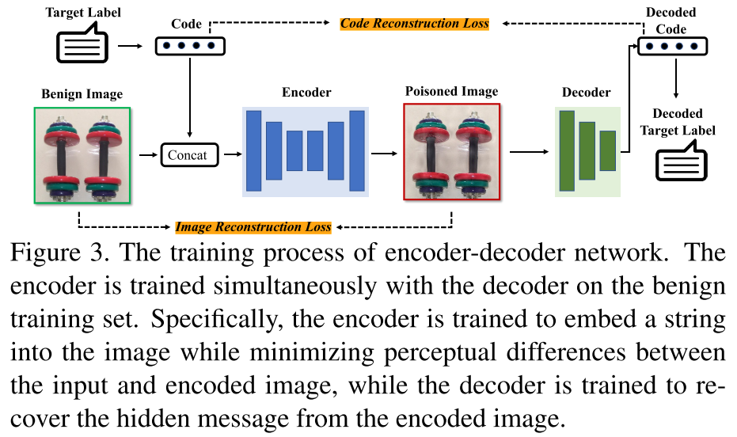
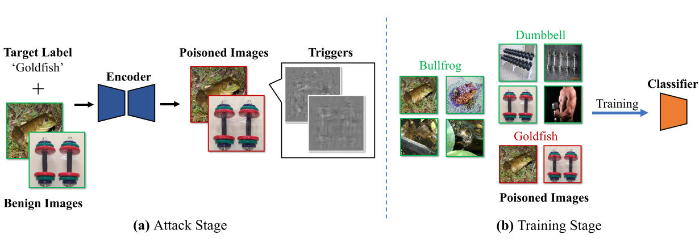

Invisible Backdoor Attack With Sample - Specific Triggers
（ 2020.12.07 ICCV 21 ）
Yuezun Li, Yiming Li, Baoyuan Wu*, Longkang Li, Ran He, and Siwei Lyu*
Ocean University of China, Qingdao, China
School of Data Science, The Chinese University of Hong Kong, Shenzhen, China
Secure Computing Lab of Big Data, Shenzhen Research Institute of Big Data, Shenzhen, China
Tsinghua Shenzhen International Graduate School, Tsinghua University, Shenzhen, China
NLPR/CRIPAC, Institute of Automation, Chinese Academy of Sciences, Beijing, China
University at Buffalo, SUNY, NY, USA
所属类别：Dirty - Label | Sample - Specific | Digital Attack | Single Trigger Attack
推荐阅读指数：❤❤❤❤❤
简介
文章先是讨论了目前主流的后门防御方法能够成功的基础——不同图片添加的触发器是相同的这一假设，即对于不同的输入图片，它们的触发器都是相同的模式（比如每张图片都是在图片的右下角添加相同的补丁）。接着提出了“Sample - Specific”的概念。在触发器的设计方面，采用预训练的编码器 - 解码器网络作为触发器生成器，基于DNN的图像隐写术，在输入图片上添加噪声作为隐形的触发器，并且触发器对于每张图片都是不同的。
亮点
亮点1：提出了“Sample-Specific”的概念：
Definition 1. A backdoor attack with poisoned image generator \(G(\cdot)\) is called sample-specific if and only if \(\forall \boldsymbol{x}_i,\boldsymbol{x}_j\in\mathcal{X}(\boldsymbol{x}_i\neq\boldsymbol{x}_j),T(G(\boldsymbol{x}_i))\neq T(G(\boldsymbol{x}_j))\), where \(T(G(\boldsymbol{x}))\) indicates the backdoor trigger contained in the poisoned sample \(G(\boldsymbol{x})\).
Remark 1. Triggers of previous attacks are not sample-specific. For example, for the attack proposed in BadNets, \(T(G(\boldsymbol{x})) = \boldsymbol{t},\forall\boldsymbol{x}\in\mathcal{X}\), where \(G(\boldsymbol{x})=(1 - \boldsymbol{\lambda})\otimes\boldsymbol{x}+\boldsymbol{\lambda}\otimes\boldsymbol{t}\).
文中的“sample-specific”概念的意思是，对于不同的输入图片，它们所具有的触发器是不一样的，这个定义明显是一个宏观的概念，比如说BadNets方法，它对于每一张输入图片，触发器都是图片右下角的相同的像素块，因此它就是“Sample-Agnostic”方法，
而本文提出的方法，触发器是添加在图片上的隐形噪声，每张中毒图片的噪声都是不同的，因此是“Sample-Specific”方法。其实这里我感觉这个概念并不严谨，“样本特定"的触发器
还可以再次细分为两类：
（1）触发器与样本是一对一的关系：比如说我这里有10张将要添加触发器的图片，我有10个不同的触发器，这10张图片与10个触发器是一个一对一的关系，P1这张
图片只能添加T1，其它同理。按照“Sample-Specific”的定义，这里每张图片添加的触发器都不一样，是符合定义的，注意这里每张图片的触发器是唯一的；
（2）触发器与样本不是一对一的关系：
我这里还有10张将要添加触发器的图片，我有20个不同的触发器，我对于每张图片，我都从这20个触发器中选择1个来添加，只不过选了的不能再选，那么一共有C（20,10）种选法，这明显也符合文中的定义，
只不过图片和触发器不是一一对应的关系，不同的图片，可以添加不同的触发器。
其次，“Sample-Specific”概念如果从微观上来讲，就更不严谨了（之前受一位师兄的启发）。早期的后门攻击方法都比较简单，而后期的攻击方法越来越复杂，越来越难判断。比如有一篇文章它将“图片的旋转”作为触发器，
即：“向左转了20°的图片”被识别为目标标签，从宏观上讲，触发器都是一样的，因为每张图片都是“向左转了20°”，但从微观上讲，图片都是由像素构成的，不同图片的像素也不一样，那么对于
像素的旋转，每张图片都是不一样的，这又成了“Sample-Specific”方法，同理可以分析WaNet这篇文章。
当然，这些都是我自己的个人看法，这篇文章提出的“Sample-Specific”概念在当时还是非常重要的！

亮点2：采用预训练的编码器-解码器网络作为TIF，基于DNN图像隐写术，在图片上生成加性噪声作为隐形触发器：
使用预先训练的编码器-解码器网络作为TIF，以生成样本特定的触发器，其由基于DNN的图像隐写术激发。
所生成的触发器是包含目标标签的代表性字符串的不可见的附加噪声。攻击者可以灵活地设计字符串。例如，它可以是名称、目标标签的索引，甚至是随机字符。之后在良性训练集上同时训练编码器与解码器。
具体地说，编码器被训练成在最小化输入图像和编码图像之间的感知差异的同时将字符串嵌入到图像中，而解码器将从编码图像恢复隐藏消息。


总结
最后简单总结分类一下，这篇文章是明显的“Dirty-Label”、“Sample-Specific”、“Single Trigger Attack”攻击方法，
由于触发器是添加在图片上隐形的噪声，在物理世界中很难部署，因此分类为“Digital Attack”攻击方法。